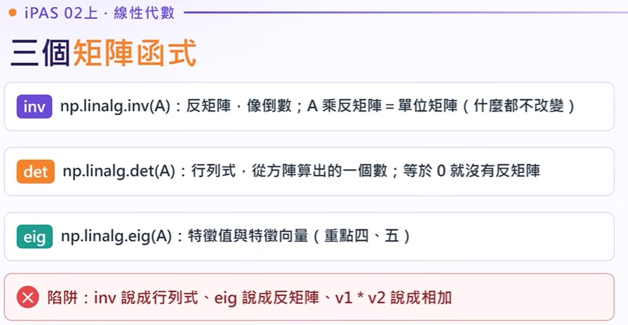
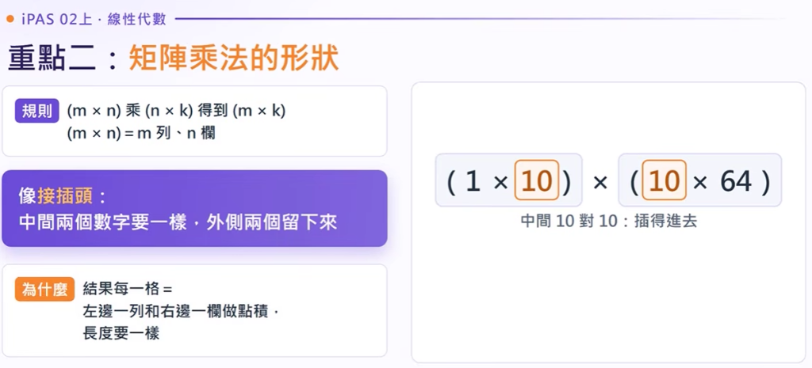
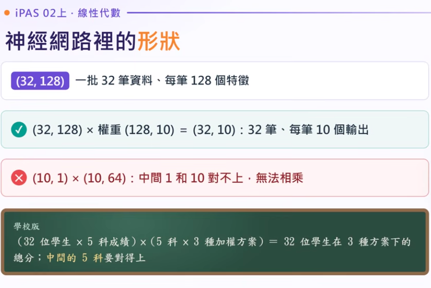
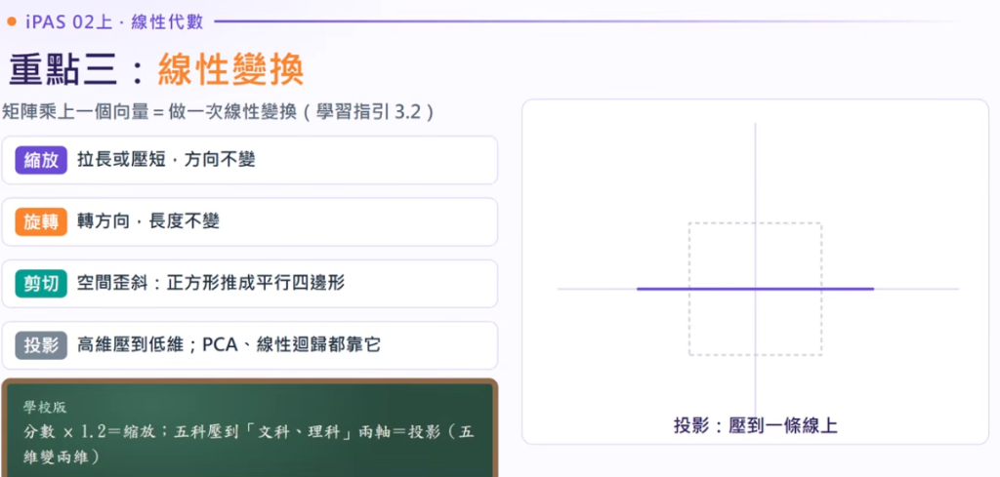
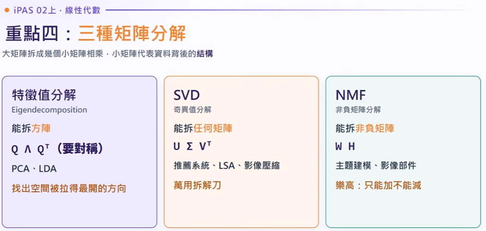
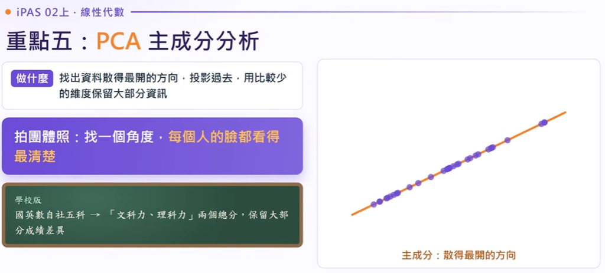
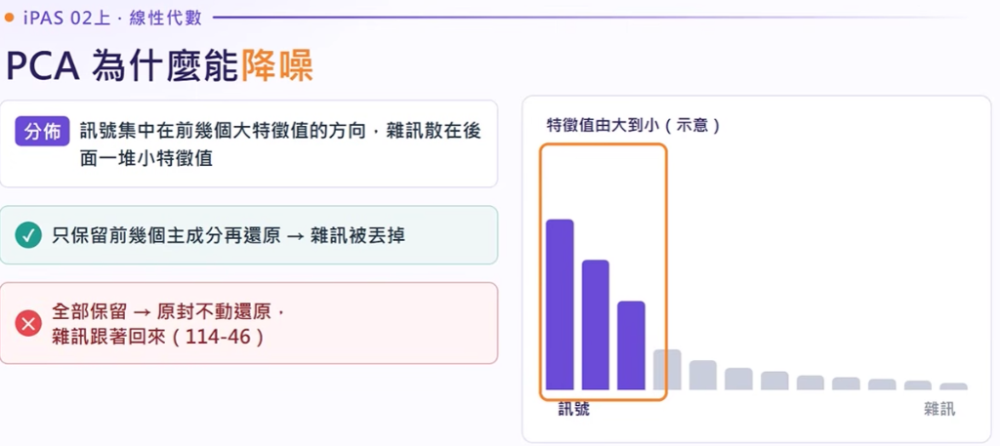
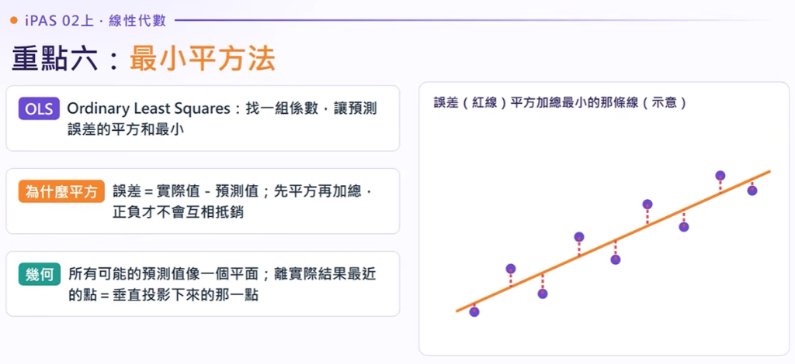
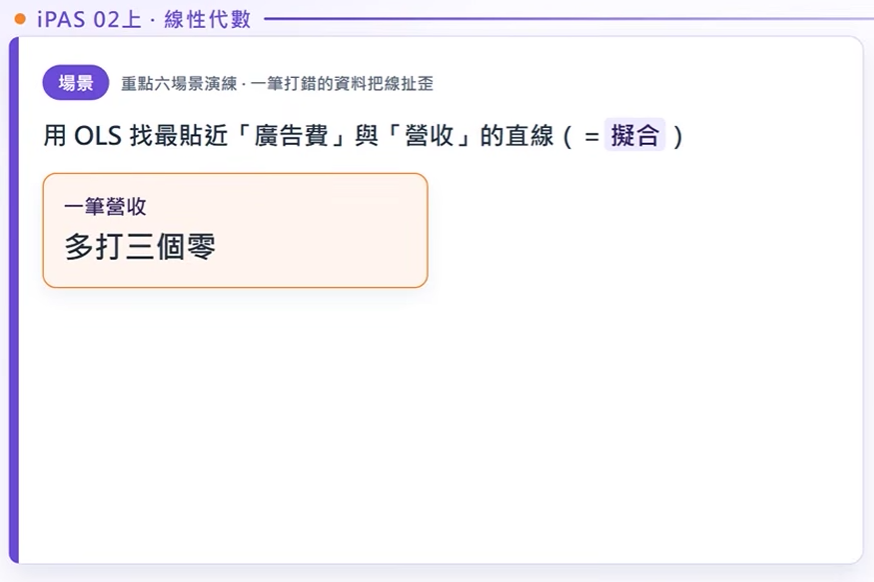

韋哥-02-
【iPAS AI應用規劃師_中級科目三 系列 EP02(上)】
線性代數｜帶你看懂矩陣乘法、矩陣分解和 PCA。
本教學專為 iPAS AI 應用規劃師考試設計，融合向量運算、矩陣乘法形狀相容性、空間線性仿射變換、三大矩陣分解（EVD/SVD/NMF）、PCA 特徵值累積變異量與 OLS 離群值防禦。上方為互動模擬實驗室，下方為同步時間軸逐字稿系統，助您高效精準複習！
開場隨堂即測：主成分累積變異量計算
iPAS 高頻必考經典情境計算題 (對應影片 00:00 與 10:08)
一組高維資料經過 PCA（主成分分析）處理後，得到前三個主成分的特徵值（Eigenvalues）分別為：
λ₁ = 6、
λ₂ = 3、
λ₃ = 1。
請問：若模型要求至少保留 80% 的總變異量（Variance），工程師最少需要選取幾個主成分？
🎛️ 特徵值累積變異量即時推算器 動態條形圖
前兩成分累積 = $\frac{6 + 3}{10} = \mathbf{90\% \ge 80\%}$，故最少需要 2 個主成分。
向量三大運算與 NumPy 常用矩陣函式
點積 (Dot Product)、L2 範數 (L2 Norm)、逐元素相乘 (Hadamard / 遮罩)
對應位置相乘再加總 = 方向有多一致
向量的長度：從原點走到那個點的直線距離
對應位置相乘、不加總，一格對一格
【學校版】兩位學生的各科成績各排成一個向量：
- 點積 (Dot Product): 對應元素相乘後全部加總，結果為純量 (Scalar)。表向量方向一致度。
- L2 範數 (L2 Norm): 歐幾里得長度 $\|v\|_2 = \sqrt{\sum v_i^2}$，衡量權重強度。
- 逐元素乘積 (Hadamard): 對應元素相乘但不加總，輸出維度與原向量相同。
不要混淆 np.dot(A, B) 與 A * B！
在神經網路中，Dropout 隨機遮罩 (Masking) 與注意力遮罩是用 0 與 1 的向量做「逐元素相乘」，不是矩陣乘法點積！
點積像「同心協力指數」： 若兩人拔河向同一方向（夾角 0°），點積最大；互相垂直（90°）無關聯；方向相反為負值。
逐元素乘積像「濾光片」： 0 代表阻隔遮蔽，1 代表放行。
🎮 互動體驗 1：向量夾角與點積／餘弦相似度模擬器
拖動滑桿旋轉向量 B，即時觀察點積正負、數值大小與投影幾何含意
import numpy as np
dot_val = np.dot(u, v) # 點積
norm_v = np.linalg.norm(v) # L2 範數長度
mask_out = u * v # 逐元素乘積 (遮罩)
三個矩陣函式（NumPy 關鍵運算）

np.linalg.inv(A)
反矩陣，像倒數；A 乘反矩陣 = 單位矩陣（什麼都不改變）
np.linalg.det(A)
行列式，從方陣算出的一個數；等於 0 就沒有反矩陣（奇異矩陣）
np.linalg.eig(A)
特徵值與特徵向量（後續重點四矩陣分解、重點五 PCA 之基石）
inv 說成行列式（正解是反矩陣）
eig 說成反矩陣（正解是特徵值/向量）
v1 * v2 說成相加（正解是逐元素相乘）
矩陣乘法的維度規則（接插頭幾何法）
形狀匹配原則 $(A \times B) \times (B \times C) = (A \times C)$ 與深度學習常見形狀除錯
重點二：矩陣乘法的形狀

(m × n) 乘 (n × k) 得到 (m × k)
(m × n) = m 列 (橫排)、n 欄 (直排)
中間兩個數字要一樣，外側兩個留下來！
結果每一格 = 左邊一列和右邊一欄做點積，長度要一樣才能點對點相乘！
經典神經網路全連接層：若輸入 Batch 資料為 (64, 784)，預計輸出 128 維特徵。
• 錯誤寫法： 權重陣列存成 (128, 784)，直接相乘會報錯：
ValueError: shapes (64,784) and (128,784) not aligned!
• 正確解法： 權重必須先作轉置（Transpose, $W^T$）變成 $(784, 128)$，中間 784 吻合後，輸出才為 $(64, 128)$。
1. 內側維度 (K)： 猶如公母接頭，數字必須完全相同才插得進去！
2. 外側維度 (M, N)： 決定最終相乘出來的新矩陣幾列幾欄。
🔌 互動體驗 2：動態矩陣「接插頭」形狀相容性檢測儀
自由調整矩陣 A 與 B 的維度，觀察插頭能否吻合，若吻合即時生成結果矩陣
神經網路裡的形狀

= 32 位學生在 3 種方案下的總分
➜ 核心原則：中間的 5 科必須要對得上！
線性變換四大動作與激活函數必要性
縮放 (Scaling)、旋轉 (Rotation)、剪切 (Shearing)、投影 (Projection) 與矩陣結合律

拉長或壓短，方向不變
轉方向，長度不變
空間歪斜：正方形推成平行四邊形
高維壓到低維；PCA、線性迴歸都靠它
大家的成績同比例拉大，方向順序不變，但絕對數值改變。
國英數自社五個維度，投影壓縮至文科理科兩大主成分軸上。
神經網路的每一層
接在後面的非線性函數：ReLU 把負數變 0、正數不變。
（沒有激活函數，再多層也退化為單層線性回歸）
把類別轉成向量；每個詞在大表裡有自己的一列，查表 = 取出那一列。
one-hot 向量（自己那格是 1、其他是 0）乘這張表 ➜ 本質也是一次矩陣運算！
Q：若一個神經網路疊加了 10 層 Dense 密集層，但中間「完全沒有加入激活函數 (No Activation)」，此網路的表達能力為何？
A：完全等同於「單層線性模型」！
依據線性代數結合律：$W_{10}(W_9(...(W_1 X))) = (W_{10}W_9...W_1)X = W_{total}X$。多個線性變換相乘依然只是一個線性變換，無法學會 XOR 等非線性特徵。這就是為什麼 ReLU、GELU 等非線性激活函數是神經網路不可或缺的靈魂！
- 原點固定： 變換前為 $(0, 0)$，變換後依然必須是 $(0, 0)$。
- 網格線保持平行且等距： 空間中原本平行的直線，經過矩陣轉換後依然必須是平行直線。
- 四種變換基本型： 縮放（拉長壓扁）、旋轉（方向改變長度守恆）、剪切（斜向拉扯）、投影（高維降為低維）。
📐 互動體驗 3：線性代數幾何變換即時變形器
點選不同變換動作，觀察 2D 單位正方形與網格空間如何被矩陣變換扭曲
[ 0.00 1.00 ]
單位矩陣：向量完全不變，空間保持原始正交長度。
三種關鍵矩陣分解大比拼 (EVD vs SVD vs NMF)
矩陣條件限制、應用場景與 LDA 監督式降維對比

特徵值分解
EigendecompositionSVD
奇異值分解NMF
非負矩陣分解分解的細節
Q Λ Qᵀ 還要對稱。➜ PCA 的協方差矩陣（每兩個特徵一起變動的程度）剛好就是對稱方陣！
【SVD 學校版】：從成績表找出「文科力」、「理科力」兩種潛在潛能維度。
【NMF 學校版】：這位學生 = 60% 文科型 + 40% 藝能型（只能相加疊加，比例直觀好懂）。
題目訊號：分解
PCA 降維五步驟與影像降噪陷阱
協方差矩陣、特徵值挑選、累積解釋變異比與降噪不縮減維度陷阱
重點五：PCA 主成分分析

找出資料散得最開的方向，投影過去，用比較少的維度保留大部分資訊！
找一個最佳角度，讓每個人的臉都看得最清楚、最少遮蔽！
PCA五步驟
特徵值= 變異量
主成分彼此正交（互相垂直、互不相關），能去冗餘與雜訊，徹底解決多重共線性問題。
1. 只抓線性關係（非線性流形無法展平）；
2. 新特徵是線性組合，不好解釋物理意義；
3. 怕離群值（Outliers）：平均值與協方差極易被極端值拉偏。
PCA為什麼能降噪？

訊號集中在前幾個大特徵值的方向，雜訊散在後面一堆小特徵值。
若全部主成分保留（100% components） ➜ 原封不動還原，雜訊跟著全部回來，根本沒有達到降噪目的！
最小平方法 (OLS) 的幾何投影與離群值破壞
常規方程式 (Normal Equation)、殘差平方敏感度與穩健回歸解法
重點六：最小平方法 (OLS)

Ordinary Least Squares：找一組係數，讓預測誤差的平方和最小！
誤差 = 實際值 - 預測值；先平方再加總，正負誤差才不會互相抵銷！
所有可能的預測值像一個平面；離實際結果最近的點 = 垂直投影下來的那一點！
怕離群值；一次算出解
w = (XᵀX)⁻¹ Xᵀy 一次算出閉式解，不用像梯度下降一步一步走！（特別注意：和第十三章防止過擬合的「正規化 Regularization」無關！）
pinv 替代版反矩陣。
【學校版】「讀書時數對成績」的直線關係：
場景演練與揭曉：先找出離群值

🧲 互動體驗 5：離群值拉扯 OLS 回歸線即時模擬器
滑動滑桿改變紅色「異常離群點」的 Y 坐標，親眼見證整條迴歸線如何被輕易扭曲
np.dot
得一個數（純量）
*
得同長度陣列（向量）
矩陣相乘像接插頭：中間要一樣，外側留下來
(m × n) · (n × k) = (m × k)；中間維度 n 抵銷，外側維度留作新形狀。
PCA 特徵值 = 變異量，除以總和算比例；降噪一定要設保留幾個
解釋變異比 λ_k / Σλ 挑大特徵值；全保留還原雜訊全在，白做工（114-46 考點）。
拆非方陣、找潛在偏好 ➜ SVD
任意長寬矩陣通用，推薦系統與文字主題萬用瑞士刀。方陣用 EVD，非負部件用 NMF。
線上時間軸逐字稿系統 總時長 13:30
點選任意時間戳記即時跳轉定位，支援關鍵字即時搜尋、卡片語意高亮與段落文字複製。
開場破題：PCA 特徵值累積變異量經典測驗
「各位科技教室的夥伴大家好！在開始進入中級科目三的線性代數之前，我們先來看這一題 iPAS 歷屆超愛考的觀念情境題：
『一組資料做完 PCA（主成分分析）之後，前三個主成分對應的特徵值分別是 6、3、1。如果模型希望保留至少 80% 的變異量，請問最少需要挑選幾個主成分？』
大家先思考一下這個數字，特徵值的大小代表什麼？到底跟變異量有什麼關係？我們在後面第五個重點會為大家完整推導解答！」
資料與模型參數全是向量與矩陣：怎麼運算、怎麼拆解；PCA 重中之重。包含 114-35、114-40、115-3、114-46 考題。
點擊放大查看完整投影片特徵值 $\lambda$ 的大小直接對應資料在該主成分方向上的「變異量（Variance）」。特徵值越大，代表包含的資料訊息越多。
題目問「最少」幾個！即使保留 3 個成分能達到 100%，但若 2 個成分就已達到 90%（超過 80% 門檻），正確答案必須選 2 個而非 3 個！
重點一：向量的三個核心運算與神經網路對應
「好，進入第一個核心主題：向量的三大運算。在 AI 演算法裡面，向量有三種最常出現的運算方式，很多人寫程式常搞混：
第一種是點積（Dot Product）：對應位置元素相乘後『全部加總』，出來的結果是一個『純量』。它代表兩個向量方向的一致程度，也就是投影量。像是我們在算神經網路單層的神經元輸出、或是注意力機制（Attention Score）計算關聯度，通通都是點積。
第二種是L2 範數（L2 Norm）：也就是這個向量的長度。各元素平方和開根號。模型訓練時為了防止過擬合（Overfitting），在損失函數加上權重長度的懲罰，這就是 L2 正則化（Weight Decay）。
第三種是逐元素相乘（Element-wise Product）：只乘對應位置，『不加總』！輸出依然是一個向量。這個最典型的應用就是遮罩（Masking）機制，例如 Dropout 隨機把神經元關閉，就是用 0 和 1 的向量做逐元素相乘。」
點積（純量、方向一致度）、L2 範數（長度、正則化）、逐元素相乘（向量、遮罩 Dropout）。黑板：兩學生各科成績點積大 = 強弱科方向一致。
點擊放大查看完整投影片利用逐元素乘積保留第 1、3 項，第 2 項被 0 乘後直接熄火抑制。
NumPy 矩陣三大關鍵函式：`inv`、`det`、`eig`
「在 Python 實作中，`np.linalg` 裡面有三個函式是筆試一定會考的：
第一個是 `inv`（反矩陣）：就像數字的倒數一樣，矩陣乘上它的反矩陣會變成單位矩陣 $I$。但請注意：必須是方陣，而且行列式不能為 0！
第二個是 `det`（行列式）：代表這個矩陣變換空間時的體積放大縮小率。如果 `det == 0`，代表這個空間被壓扁成一條線或一個點了，這時候矩陣就叫做奇異矩陣（Singular Matrix），它是『沒有反矩陣』的！
第三個是 `eig`（特徵值與特徵向量）：用在 PCA 和協方差矩陣分解，把最關鍵的擴散方向抽離出來。」
`inv`（反矩陣、倒數）、`det`（行列式、為0無反矩陣）、`eig`（特徵值/向量）。紅色陷阱：inv說成行列式、eig說成反矩陣、v1*v2說成相加。
點擊放大查看完整投影片重點二：矩陣乘法的維度規則（接插頭幾何法）
「重點二，也是很多剛學深度學習的同學最常卡關的地方：矩陣乘法的形狀規則。大家記得我講的『接插頭口訣』：
兩個矩陣能不能相乘，左邊的欄數（Cols）必須等於右邊的列數（Rows）。也就是 $(A \times B)$ 乘以 $(B \times C)$，中間的 $B$ 就像公母接頭，數字必須一模一樣才插得進去！插進去之後中間抵銷，乘出來的形狀由兩側決定，變成 $(A \times C)$。」
口訣：中間兩個數字要一樣，外側兩個留下來！
例如 $(1 imes 10) imes (10 imes 64)$，中間 10 對 10 插得進去，結果形狀為 $(1 imes 64)$。
神經網路實戰案例：Shape Mismatch 與權重轉置
「看這道經典除錯題：我們輸入一個 Batch 是 64 筆手寫數字影像，每張影像展平後是 784 維，資料形狀是 $(64, 784)$。第一層隱藏層想要輸出 128 個特徵。
如果工程師把權重矩陣存成 $(128, 784)$，直接去乘，Python 馬上噴錯：`ValueError: shapes (64, 784) and (128, 784) not aligned!`。這時候怎麼辦？
對，答案就是把權重矩陣做轉置（Transpose）！將 $(128, 784)$ 轉置成 $(784, 128)$，中間 784 對齊吻合，輸出就會是漂亮的 $(64, 128)$。」
✔ $(32, 128) imes (128, 10) = (32, 10)$；若誤為 $(10, 1) imes (10, 64)$ 中間對不上則噴錯。
黑板比喻：$(32 ext{ 位學生} imes 5 ext{ 科}) imes (5 ext{ 科} imes 3 ext{ 方案}) = 32 ext{ 位學生在 } 3 ext{ 種方案下總分}$。
重點三：線性變換四大幾何動作與多層網路激活函數
「重點三：矩陣在幾何上到底在做什麼？矩陣本質上就是『空間的線性變換』。有四個經典動作：
1. 縮放（Scaling）：拉長或壓扁；2. 旋轉（Rotation）：轉動方向但長度守恆；3. 剪切（Shearing）：斜向拉扯，把正方形拉成菱形或平行四邊形；4. 投影（Projection）：把高維度空間拍扁到低維度平面。
那為什麼深度神經網路一定要加非線性激活函數（Activation Function，如 ReLU）？因為線性代數有結合律！如果十層 Dense 全都不加激活函數，$W_{10}(W_9(...(W_1 X))) = (W_{10}W_9...W_1)X = W_{total}X$！疊再多層本質上都只等於單層線性回歸，完全無法學習非線性曲面！」
矩陣乘向量 = 做一次線性變換！縮放（拉長壓短）、旋轉（轉方向長度不變）、剪切（正方形推成平行四邊形）、投影（高維壓到低維，PCA基礎）。
黑板：分數 × 1.2 = 縮放；五科壓到「文科、理科」兩軸 = 投影。
$z = Wa + b$ 線性變換後必須接非線性激活函數（如 ReLU）防止多層線性退化；Embedding 查表本質為 one-hot 向量乘權重表！
點擊放大查看完整投影片重點四：三種關鍵矩陣分解 (EVD vs SVD vs NMF)
「重點四是 iPAS 每年必出的送分題，考大家矩陣分解的限制與情境：
第一種是 EVD（特徵值分解）：它的限制最嚴格，『必須是方陣』！PCA 裡面的協方差矩陣因為維度是特徵數乘特徵數，恰好是對稱方陣，所以用 EVD。
第二種是 SVD（奇異值分解）：這是『萬用分解』！不管是長條形、扁平形，任意長寬矩陣都能拆成 $U \Sigma V^T$。在推薦系統裡面，幾十萬用戶對幾萬部電影的稀疏評分矩陣，通通都靠 SVD 抽取出潛在因子（Latent Factors）。
第三種是 NMF（非負矩陣分解）：限制所有元素必須大於等於 0。它的優點是具有高度可解釋性，因為只有加法沒有負數抵銷，常用在文章的主題建模（Topic Modeling）。」
• EVD：限制方陣，協方差矩陣對稱剛好用它。
• SVD：萬用拆解刀，推薦系統、LSA 文本拆解。
• NMF：非負矩陣，樂高只能加不能減，直觀可解釋。
重點五：PCA 主成分分析五步驟與影像降噪陷阱
「重點五：PCA 是非監督降維的王者。標準五步驟：
1. 資料中心化（減去特徵平均值）；2. 計算協方差矩陣；3. 對協方差矩陣做特徵值分解；4. 將特徵值由大到小排序，挑選累積變異比例前 $k$ 個；5. 投影到新坐標軸完成降維。
這裡有一個考試最愛考的『影像降噪陷阱』：影像的主體訊號通常都在前幾個較大的主成分，而隨機雜訊（Noise）分散在後面極微小的特徵值。如果工程師用 PCA 降噪時，把 `n_components` 設為全部（100%），那重建時雜訊也會被 100% 還原，根本沒有任何降噪效果！」
大特徵值代表真實訊號，小特徵值代表雜訊。降噪必須捨棄後段微小成分！全部保留還原等於雜訊原封不動跟著回來，毫無降噪效果。
點擊放大查看完整投影片開場隨堂測驗解答與正式推導
「好，現在我們來揭曉一開始的測驗題目：特徵值分別是 6、3、1，要求至少保留 80% 的變異量。
第一步算總變異量：$6 + 3 + 1 = 10$。
第二步算第一主成分佔比：$6 / 10 = 60\%$。很明顯，60% 沒有達到 80% 門檻。
第三步算前兩個主成分累積佔比：$(6 + 3) / 10 = 9 / 10 = 90\%$！90% 已經成功跨過 80% 門檻。
所以這題答案非常明確：最少需要選取 2 個主成分！」
解釋變異比例 = 某個特徵值 ÷ 全部特徵值加總。λ₁=6, λ₂=3, λ₃=1，總和 10，前兩成分佔 (6+3)/10 = 90% ≥ 80%，故正解最少需 2 個主成分！
點擊放大查看完整投影片重點六：最小平方法 (OLS) 的幾何投影與離群值處理
「最後一個重點：最小平方法（OLS）。幾何本質是將目標向量 $y$ 垂直投影到特徵張成的空間，解析解就是著名的常規方程式（Normal Equation）：$w = (X^T X)^{-1} X^T y$。
但是 OLS 有一個致命缺點：它對離群值（Outliers）非常敏感！因為殘差取了平方，單一一個極端值的誤差平方會暴增幾百倍，硬生生把整條迴歸線拉偏。考試問你怎麼解決？
有兩種標準對策：第一種是用盒鬚圖與 IQR（四分位距）檢測剔除；第二種是如果極端值是真實數據不能刪除，損失函數改用對離群值具穩健性的 Huber Loss 或 MAE！」
OLS 垂直投影最小化誤差平方和；正規方程式用反矩陣一次算出閉式解；離群值誤差被平方放大把線扯歪，正解為 IQR 或改用 Huber Loss！
點擊放大查看完整投影片結尾複習：iPAS 科目三線性代數 30 秒秒殺口訣
「最後 30 秒，幫大家整理考試秒殺四句口訣：
1. 矩陣相乘插頭對，中間抵銷看兩邊。
2. 多層網路無激活，疊了十層等單層。
3. 方陣 EVD、推薦 SVD、非負主題選 NMF。
4. PCA 特徵值算比例，離群拉偏改 Huber。
記住這四句話，中級科目三的線性代數考題就基本穩拿滿分了！祝大家考試順利一戰過關！」